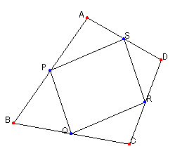

Midpoint of Side of Quadrilateral and Parallelogram
Problem
Point P, Q, R and S are midpoints of each side of quadrilateral ABCD.
Prove that quadrilateral PQRS is parallelogram by using vector.
Reference;
Problem about Quadrilateral

Applet